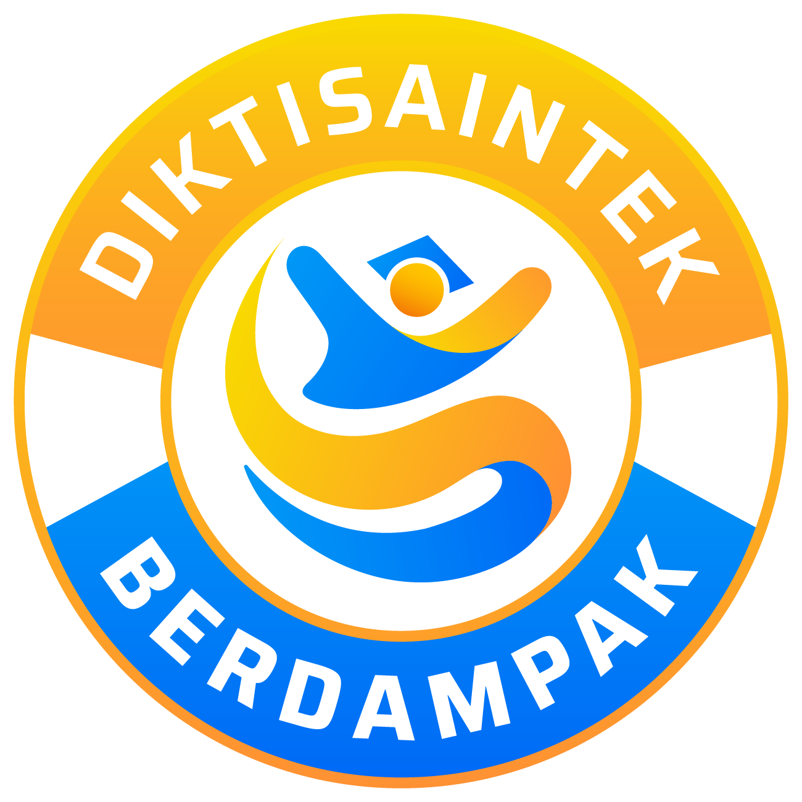
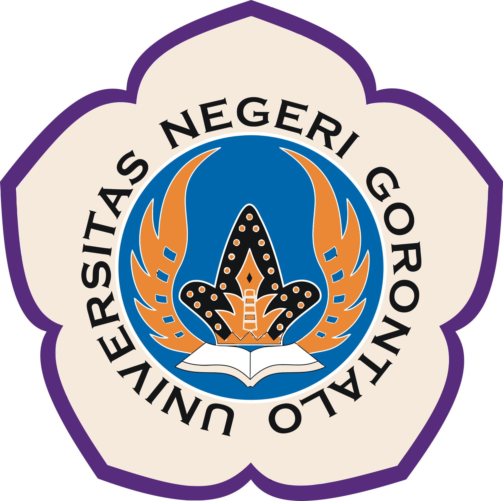

PROGRAM SAINTEK RISET PEMBELAJARAN TRANSFORMATIF DI PERGURUAN TINGGI (SATRIA) TAHUN 2026
Direktorat Strategi dan Sistem Pembelajaran Transformatif
Direktorat Jenderal Sains dan Teknologi
PRAKTIKUM DIJEDA
Progres kristal tersimpan otomatis di peramban.
PENGATURAN
PANDUAN PRAKTIKUM
- Alur Misi: Kumpulkan 3 Kristal secara berurutan (Galeri Materi → Lab Saklar → Arena Uji) untuk menyalakan reaktor cahaya di Lobi.
- Bergerak: Gunakan tombol W A S D atau panah (Desktop) / stik kiri (HP).
- Menoleh & Pintasan: Klik layar untuk mengunci kursor mouse. Tekan T untuk membuka/menutup Log Praktikum, dan tekan C atau Esc untuk membuka/menutup menu Control.
- Interaksi Objek: Arahkan titik bidik ke podium, saklar input (A/B), atau pintu, lalu Klik Kiri.
- Arena Uji (Kuis): Berjalan dan berdiri di atas lingkaran jawaban (0 atau 1) hingga indikator terisi penuh.
- Layar Penuh: Tekan F11 (atau Fn + F11 pada laptop) untuk pengalaman praktikum layar penuh yang lebih imersif.
KONFIRMASI AKSI
Apakah Anda yakin ingin melanjutkan?